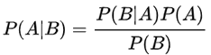

通俗地理解贝叶斯公式（定理）
朴素贝叶斯（Naive Bayesian algorithm）是有监督学习的一种分类算法，它基于“贝叶斯定理”实现，该原理的提出人是英国著名数学家托马斯·贝叶斯。贝叶斯定理是基于概率论和统计学的相关知识实现的，因此在正式学习“朴素贝叶斯算法”前，我们有必要先认识“贝叶斯定理”。
上述问题可能与我们高中时期所接受的的概率有所冲突，因为你所接触的概率问题可能是这样的：“一个袋子里面有 10 个球，其中 4 个黑球，6 个白球，如果你随机抓取一个球，那么是黑球的概率是多少？”毫无疑问，答案是 0.4。这个问题非常简单，因为我们事先知道了袋子里面黑球和白球的比例，所以很容易算出摸一个球的概率，但是在某些复杂情况下，我们无法得知“比例”，此时就引出了贝叶斯提出的问题。
在统计学中有两个较大的分支：一个是“频率”，另一个便是“贝叶斯”，它们都有各自庞大的知识体系，而“贝叶斯”主要利用了“相关性”一词。下面以通俗易懂的方式描述一下“贝叶斯定理”：通常，事件 A 在事件 B 发生的条件下与事件 B 在事件 A 发生的条件下，它们两者的概率并不相同，但是它们两者之间存在一定的相关性，并具有以下公式（称之为“贝叶斯公式”）：
有上述描述可知，贝叶斯公式可以预测事件发生的概率，两个本来相互独立的事件，发生了某种“相关性”，此时就可以通过“贝叶斯公式”实现预测。
上述示例就是条件概率的应用，小红和小明之间产生了某种关联性，本来俩个相互独立的事件，变得不再独立。但是还有一种情况，比如小亮每天准时到家 P(小亮回家) =1/2，但是小亮喜欢独来独往，如果问 P(小亮回家|小红回家) 的概率是多少呢？你会发现这两者之间不存在“相关性”，小红是否到家，不会影响小亮的概率结果，因此小亮准时到家的概率仍然是 1/2。
我们知道每一个事物都有自己的特征，比如前面所说的轿车、货车、客车，它们都有着各自不同的特征，距离过远的时候，我们无法用肉眼分辨，而当距离达到一定范围内就可以根据各自的特征再次做出概率预判，这就是后验概率。比如轿车的速度相比于另外两者更快可以记做 P(轿车|速度快) = 55%，而客车体型可能更大，可以记做 P(客车|体型大) = 35%。
如果用条件概率来表述 P(体型大|客车)=35%，这种通过“车辆类别”推算出“类别特征”发生的的概率的方法叫作“似然度”。这里的似然就是“可能性”的意思。
我们知道“朴素贝叶斯算法”由两个词语组成。朴素（native）是用来修饰“贝叶斯”这个名词的。按照中文的理解“朴素”意味着简单不奢华。朴素的英文是“native”，意味着“单纯天真”。
朴素贝叶斯是一种简单的贝叶斯算法，因为贝叶斯定理涉及到了概率学、统计学，其应用相对复杂，因此我们只能以简单的方式使用它，比如天真的认为，所有事物之间的特征都是相互独立的，彼此互不影响。关于朴素贝爷斯算法在下一节会详细介绍。
贝叶斯定理
贝叶斯定理的发明者 托马斯·贝叶斯 提出了一个很有意思的假设：“如果一个袋子中共有 10 个球，分别是黑球和白球，但是我们不知道它们之间的比例是怎么样的，现在，仅通过摸出的球的颜色，是否能判断出袋子里面黑白球的比例？”上述问题可能与我们高中时期所接受的的概率有所冲突，因为你所接触的概率问题可能是这样的：“一个袋子里面有 10 个球，其中 4 个黑球，6 个白球，如果你随机抓取一个球，那么是黑球的概率是多少？”毫无疑问，答案是 0.4。这个问题非常简单，因为我们事先知道了袋子里面黑球和白球的比例，所以很容易算出摸一个球的概率，但是在某些复杂情况下，我们无法得知“比例”，此时就引出了贝叶斯提出的问题。
在统计学中有两个较大的分支：一个是“频率”，另一个便是“贝叶斯”，它们都有各自庞大的知识体系，而“贝叶斯”主要利用了“相关性”一词。下面以通俗易懂的方式描述一下“贝叶斯定理”：通常，事件 A 在事件 B 发生的条件下与事件 B 在事件 A 发生的条件下，它们两者的概率并不相同，但是它们两者之间存在一定的相关性，并具有以下公式（称之为“贝叶斯公式”）：

看到上述公式，你可能一头雾水，不过不必慌张，下面我们来了解一下“贝叶斯”公式。符号意义
首先我们要了解上述公式中符号的意义：- P(A) 这是概率中最基本的符号，表示 A 出现的概率。比如在投掷骰子时，P(2) 指的是骰子出现数字“2”的概率，这个概率是 六分之一。
- P(B|A) 是条件概率的符号，表示事件 A 发生的条件下，事件 B 发生的概率，条件概率是“贝叶斯公式”的关键所在，它也被称为“似然度”。
- P(A|B) 是条件概率的符号，表示事件 B 发生的条件下，事件 A 发生的概率，这个计算结果也被称为“后验概率”。
有上述描述可知，贝叶斯公式可以预测事件发生的概率，两个本来相互独立的事件，发生了某种“相关性”，此时就可以通过“贝叶斯公式”实现预测。
条件概率
条件概率是“贝叶斯公式”的关键所在，那么如何理解条件概率呢？其实我们可以从“相关性”这一词语出发。举一个简单的例子，比如小明和小红是同班同学，他们各自准时回家的概率是 P(小明回家) = 1/2 和 P(小红回家) =1/2，但是假如小明和小红是好朋友，每天都会一起回家，那么 P(小红回家|小明回家) = 1 (理想状态下)。上述示例就是条件概率的应用，小红和小明之间产生了某种关联性，本来俩个相互独立的事件，变得不再独立。但是还有一种情况，比如小亮每天准时到家 P(小亮回家) =1/2，但是小亮喜欢独来独往，如果问 P(小亮回家|小红回家) 的概率是多少呢？你会发现这两者之间不存在“相关性”，小红是否到家，不会影响小亮的概率结果，因此小亮准时到家的概率仍然是 1/2。
贝叶斯公式的核心是“条件概率”，譬如 P(B|A)，就表示当 A 发生时，B 发生的概率，如果P(B|A)的值越大，说明一旦发生了 A，B 就越可能发生。两者可能存在较高的相关性。
先验概率
在贝叶斯看来，世界并非静止不动的，而是动态和相对的，他希望利用已知经验来进行判断，那么如何用经验进行判断呢？这里就必须要提到“先验”和“后验”这两个词语。我们先讲解“先验”，其实“先验”就相当于“未卜先知”，在事情即将发生之前，做一个概率预判。比如从远处驶来了一辆车，是轿车的概率是 45%，是货车的概率是 35%，是大客车的概率是 20%，在你没有看清之前基本靠猜，此时，我们把这个概率就叫做“先验概率”。后验概率
在理解了“先验概率”的基础上，我们来研究一下什么是“后验概率？”我们知道每一个事物都有自己的特征，比如前面所说的轿车、货车、客车，它们都有着各自不同的特征，距离过远的时候，我们无法用肉眼分辨，而当距离达到一定范围内就可以根据各自的特征再次做出概率预判，这就是后验概率。比如轿车的速度相比于另外两者更快可以记做 P(轿车|速度快) = 55%，而客车体型可能更大，可以记做 P(客车|体型大) = 35%。
如果用条件概率来表述 P(体型大|客车)=35%，这种通过“车辆类别”推算出“类别特征”发生的的概率的方法叫作“似然度”。这里的似然就是“可能性”的意思。
朴素+贝叶斯
了解完上述概念，你可能对贝叶斯定理有了一个基本的认识，实际上贝叶斯定理就是求解后验概率的过程，而核心方法是通过似然度预测后验概率，通过不断提高似然度，自然也就达到了提高后验概率的目的。我们知道“朴素贝叶斯算法”由两个词语组成。朴素（native）是用来修饰“贝叶斯”这个名词的。按照中文的理解“朴素”意味着简单不奢华。朴素的英文是“native”，意味着“单纯天真”。
朴素贝叶斯是一种简单的贝叶斯算法，因为贝叶斯定理涉及到了概率学、统计学，其应用相对复杂，因此我们只能以简单的方式使用它，比如天真的认为，所有事物之间的特征都是相互独立的，彼此互不影响。关于朴素贝爷斯算法在下一节会详细介绍。
关注公众号「站长严长生」，在手机上阅读所有教程，随时随地都能学习。内含一款搜索神器，免费下载全网书籍和视频。

微信扫码关注公众号